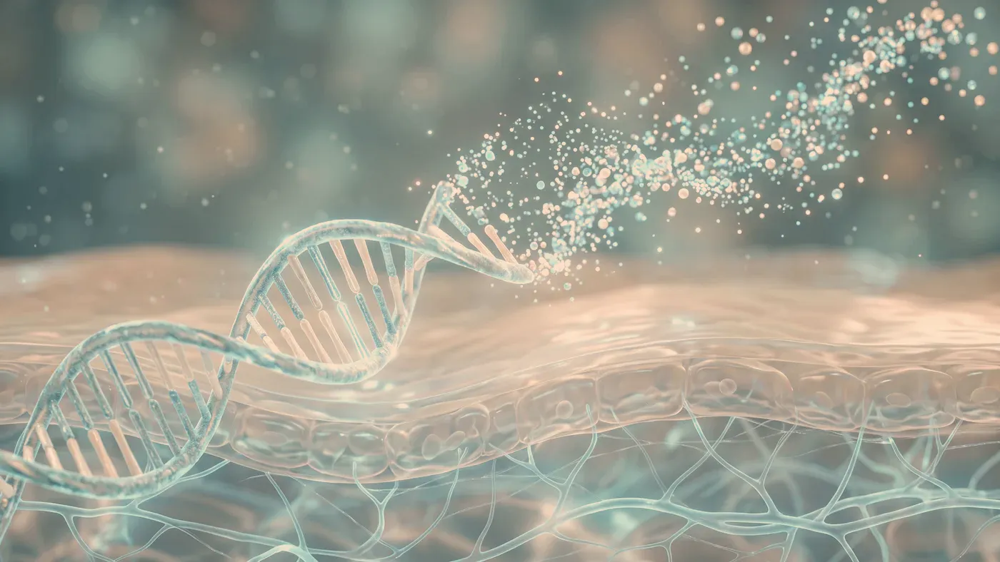
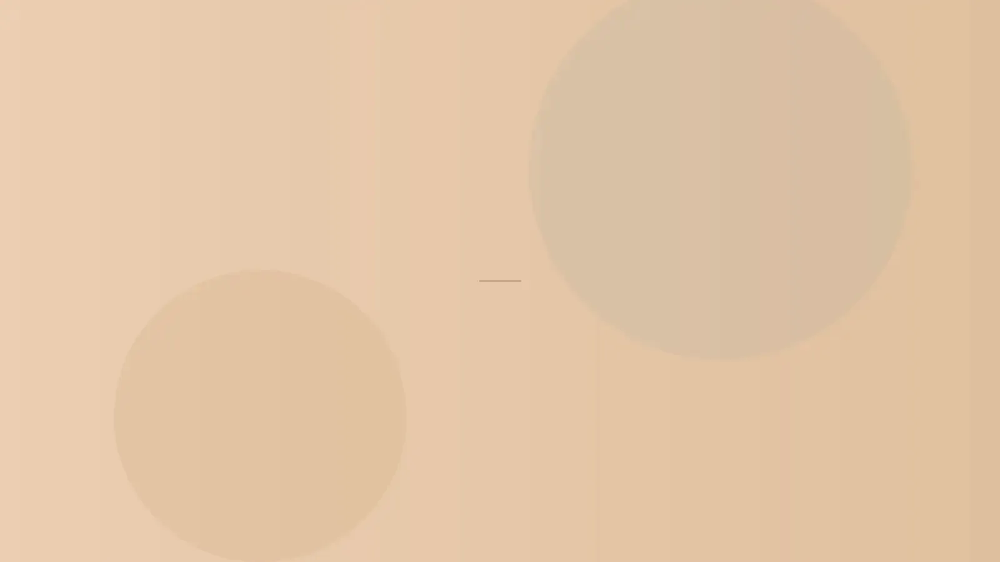

Enjeksiyonla Yapılanlar · Doku Yenilenmesi
“Somon DNA” olarak bilinen polinükleotid uygulaması
Polinükleotid uygulamasında, balık kaynaklı DNA’dan elde edilip saflaştırılmış kısa nükleotid zincirleri çok ince iğnelerle derinin orta katmanına (dermis) verilir. Halk arasındaki “somon DNA” adı bu hammaddeden gelir. Amaç, cildin kendi onarım süreçlerini desteklemektir; hacim eklemez ve etkisi kişiden kişiye değişir. Uygunluk, muayene ve öykü değerlendirmesinden sonra belirlenir.

Temsilî görsel · yapay zekâ ile üretildiNe yapar, ne yapmaz
Polinükleotid (somon DNA) nedir, neyin yerine geçmez?
Adındaki “DNA” sözcüğü, bu uygulamanın olduğundan farklı, hatta genetik bir işlem gibi algılanmasına yol açabiliyor. Ne olduğunu ve ne olmadığını ayrı ayrı yazdık.
Polinükleotidler, DNA’nın kontrollü koşullarda parçalanmasıyla elde edilen ve belirli uzunluk aralığında tutulan nükleotid zincirleridir. Tıbbi ürünlerde hammadde çoğunlukla somon ve alabalık gibi balık türlerinden sağlanır; protein ve diğer hücre bileşenlerini ayırmaya yönelik çok aşamalı bir saflaştırma ve sterilizasyondan geçirilir.
Sonuçta elde edilen ürün, suyu bağlayan ve dokuda ağ benzeri bir yapı kuran akışkan bir jeldir. Bilimsel çalışmalarda bu maddelerin, fibroblast adı verilen onarım hücrelerinin etkinliğini destekleyebileceği bildirilmiştir; bu etkinin günlük pratikte ne ölçüde görüldüğü araştırılmaya devam etmektedir.
Uygulanacak bölge, derinlik ve miktar hekim tarafından belirlenir. İçeriği ve hedefi bakımından gençlik aşısı (skinbooster) ve mezoterapi uygulamalarından ayrıdır; bunların yerine kullanılmaz.
Genlerinize dokunmaz: zincirler hücre çekirdeğine ulaşıp talimat vermez; genleriniz olduğu gibi kalır, sonraki kuşaklara geçecek bir etki de söz konusu değildir. Ürün canlı hücre içermez.
Hacim kazandırmaz: belirgin hacim kaybı olan bölgelerde dolgunun yerini tutmaz, yüz hatlarını değiştirmez; sarkmayı da düzeltmez.
Cilt hastalıklarının tedavisi değildir: rozasea, egzama, aktif akne ya da kronik kurdeşen gibi durumlarda önce altta yatan nedenin belirlenmesi gerekir.
Yanıtı önceden bilinemez: değişikliğin derecesi kişiden kişiye belirgin farklılık gösterir; bazı kişilerde beklenen etki görülmeyebilir.
Bu ad, ürünün hammaddesinin balık kaynaklı olmasından gelir ve halk arasında yaygınlaşmıştır. Ürünün etkinliği, içeriği ya da uygulama tekniği hakkında bilgi vermez; aynı adla farklı yoğunlukta ve farklı katkılar içeren ürünler anılabilir.
Bu nedenle uygulamayı adıyla değil içeriğiyle konuşuyoruz: size uygulanacak ürünün adı, içeriği, miktarı ve uygulandığı bölgeler dosyanıza kaydedilir. İçerikle ilgili merak ettiğiniz her şeyi uygulamadan önce sorabilirsiniz.
Pürüzlü bir yüzey ya da belirgin gözenekler sizi rahatsız ediyorsa gözenek ve cilt dokusu, cildiniz kuru ve mat görünüyorsa ciltte nem kaybı ve donukluk sayfasından başlayabilirsiniz. Göz çevresine ve yüzün bütününe özel planlamayı ayrıca anlattık: göz çevresi, yüz.
Plan ve seyir
Program nasıl planlanır, uygulamadan sonra neler beklenir?
İlk görüşmede uygulama yapılacağı varsayılmaz. Öykünüzün, kullandığınız ilaçların ve cildinizin durumunun ayrıntılı değerlendirilmesi, planın kendisi kadar önemlidir.
İşlem günü
Bölgeye dokunmamanız ve makyaj yapmamanız; sauna, hamam ve yoğun spora 24 saat ara vermeniz istenir.
Çubuklar oransal bir simgedir; size özel takvim muayenede netleşir.
- Muayene ve öykü: kullandığınız ilaçlar, süregelen hastalıklar, gebelik
- Cildin yakından incelenmesi: doku, ince çizgi, göz çevresi derisi
- Bölge, derinlik ve seans aralığının belirlenmesi
- Bilgilendirme ve yazılı onam — ürünün kaynağı ve içeriği açıkça anlatılır
- Uygulama, bakım önerileri ve takip
“Bir ürünü adıyla değil, içeriğiyle ve sizin cildinizle birlikte değerlendiririz.”

Temsilî görsel · yapay zekâ ile üretildiCildinizi birlikte değerlendirelim
Karar, muayene ve öykünüz tamamlandıktan sonra verilir.
Randevu isteyin- Ürün içeriğine bilinen aşırı duyarlılık: polinükleotide, balık kaynaklı maddelere ya da üründeki yardımcı bileşenlere karşı daha önce reaksiyon geliştiyse uygulama yapılmaz; geçmişte anafilaksi geçirdiyseniz plan bütünüyle yeniden değerlendirilir.
- Gebelik ve emzirme: bu dönemlerde program başlatılmaz.
- Bölgede aktif bir sorun: enfeksiyon, uçuk, iltihaplı sivilce, alevlenmiş egzama ya da açık yara varsa bölge iyileşene kadar beklenir.
- Aktif otoimmün ya da iltihaplı hastalık, keloid eğilimi: yara iyileşmesini bozan bu genel durumlarda uygulama ertelenir.
- Kanama eğilimi: pıhtılaşma bozukluğu ya da kan sulandırıcı kullanımı morluk olasılığını artırır; ilacınızdaki bir değişiklik yalnızca onu düzenleyen hekimin onayıyla konuşulur.
- Yeni geçirilmiş enfeksiyon, aşı ya da diş tedavisi: bağışıklık sistemi henüz uyarılmışken bölgesel tepki olasılığı artabileceğinden uygulama birkaç hafta ertelenir.
- Aynı bölgede içeriği bilinmeyen önceki uygulama: bölge önce muayenede ayrıca değerlendirilir.
- Beklentinin uygulamayla örtüşmemesi: belirgin hacim kaybının ya da sarkmanın giderilmesi bekleniyorsa bu uygulama önerilmez.
Uygulamadan sonra vücutta yaygın kaşıntı ve kabarıklık, dudakta ya da dilde şişme, boğazda daralma hissi, nefes almada güçlük veya baş dönmesi gelişirse; ayrıca giderek artan ağrı, deride solma, görmeyle ilgili bir değişiklik ya da ateş olursa randevu gününü beklemeyin. 112 Acil Çağrı Merkezi’ni arayın ya da en yakın hastanenin acil birimine başvurun.
Ne zaman
Program kaç seans sürer, etkisi ne kadar kalır?
Polinükleotid uygulaması tek seansla sınırlı düşünülmez; birkaç seanstan oluşan bir dizi olarak planlanır. Kaç seans yapılacağına ve seansların ne sıklıkta olacağına, uygulanan bölge ve cildinizin ilk seansa verdiği yanıt görüldükten sonra hekim karar verir; herkese aynı sayı önerilmez. Kazanımın ne kadar kalacağını önceden kestirmek mümkün değildir: yaş, deri kalınlığı, güneşle temas, sigara ve genel sağlık durumu bu süreyi değiştirir. Bazı kişilerde belirgin bir değişiklik görülmeyebilir ve bu da olası sonuçlardan biridir. Onay verirseniz, değişikliği izlenime bırakmamak için aynı ışık ve açıyla fotoğraf kaydı alınır.
Sık gelen sorular
Merak ettiğiniz soruya dokunun, yanıtı burada açılsın
Bir adım ötesi
Önce muayene, sonra plan
Muayenede cildinizi inceleyip öykünüzü dinledikten sonra bu uygulamanın sizin için anlamlı olup olmadığını birlikte konuşuruz.
Metni hazırlayan ve tıbbi açıdan gözden geçiren: Uzm. Dr. Rahmi Cebeci (Aile Hekimliği Uzmanı · Medikal Estetik Sertifikalı).
Buradaki anlatım herkese yöneliktir; size özel bir teşhis ya da tedavi planı sunmaz, muayenenin yerini tutmaz. Her uygulamanın etkisi kişiye göre farklı olur.